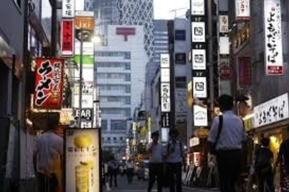

A economia do Japão é uma das mais desenvolvidas e tecnológicas do mundo, ocupando o terceiro lugar em PIB nominal. Depois da Segunda Guerra Mundial, o país passou por um rápido crescimento conhecido como “Milagre Econômico Japonês”, tornando-se uma potência industrial baseada na inovação e na qualidade.
Os principais setores da economia japonesa são a indústria automotiva, eletrônica, robótica e química, com grandes empresas como Toyota, Sony, Honda e Mitsubishi. O Japão é também um dos maiores exportadores de produtos de alta tecnologia. Entretanto, o país enfrenta desafios importantes, como o envelhecimento da população, a queda na taxa de natalidade, o baixo crescimento econômico e a dependência de importações de energia e matérias-primas. Mesmo com esses obstáculos, o Japão continua sendo uma das nações mais influentes do mundo, reconhecida por sua inovação, eficiência e estabilidade econômica.